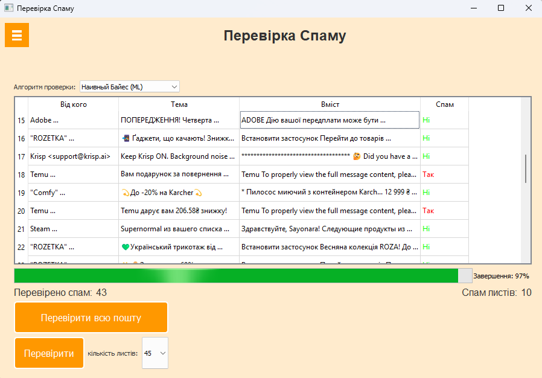

Функціональні можливості системи
Програмний комплекс пропонує широкий набір функцій для ефективного виявлення спам-повідомлень у поштовій скриньці Gmail.
Ключові можливості
4 алгоритми аналізу
Система пропонує вибір з чотирьох методів класифікації:
- Наївний Байєс (кастомна реалізація)
- Наївний Байєс (scikit-learn)
- Випадковий ліс (Random Forest)
- Логістична регресія
Фільтрація за ключовими фразами
Використання власного словника спам-фраз на трьох мовах (українська, російська, англійська) з можливістю розширення.
Історія перевірок
Всі перевірені листи зберігаються у текстовому файлі з можливістю перегляду в інтерфейсі програми.
Робота з Gmail
Підтримка IMAP-протоколу для безпосередньої роботи з поштовою скринькою:
- Перевірка окремих листів
- Аналіз всієї поштової скриньки
- Автоматичне переміщення спаму
Візуалізація результатів
Зручний інтерфейс з таблицею листів, кольоровою маркуванням спаму та статистикою перевірок.
Гнучкі налаштування
Можливість вибору алгоритму, кількості листів для перевірки та інших параметрів роботи системи.
Процес аналізу пошти
- Підключення до Gmail - автентифікація через IMAP-протокол
- Отримання листів - завантаження вказаної кількості повідомлень
- Попередня обробка - витяг тексту, теми та відправника
- Аналіз вмісту - застосування обраного алгоритму класифікації
- Класифікація - визначення ймовірності спаму
- Збереження результатів - запис до файлу історії та відображення в інтерфейсі
Порівняння алгоритмів
У програмі реалізовано порівняльний аналіз ефективності різних алгоритмів на тестовому наборі даних.
| Алгоритм | Точність | Швидкість | Помилкові спрацювання |
|---|---|---|---|
| Наївний Байєс (кастомний) | 66% | Дуже висока | 34% |
| Наївний Байєс (ML) | 88% | Висока | 12% |
| Випадковий ліс | 95% | Середня | 5% |
| Логістична регресія | 90% | Висока | 10% |
Користувач може вибрати оптимальний алгоритм залежно від потреб - максимальна точність або швидкість обробки.
Перспективи розвитку
Розширена підтримка мов
Додаткові мовні моделі для більш точного аналізу текстів
Хмарна версія
Можливість використання системи як веб-сервісу
Підтримка інших поштових сервісів
Розширення списку підтримуваних поштових серверів
Сповіщення
Система сповіщень про виявлений спам